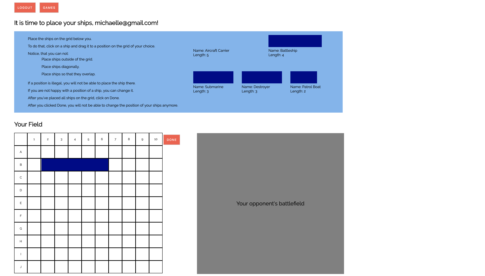
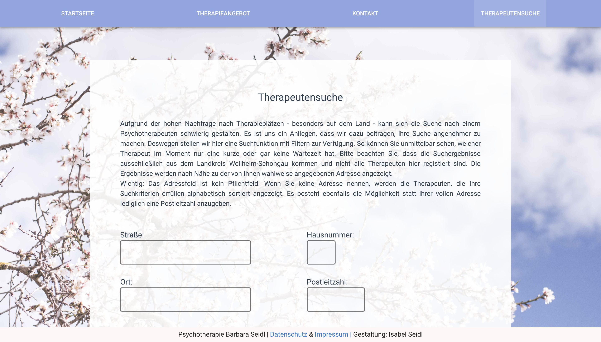
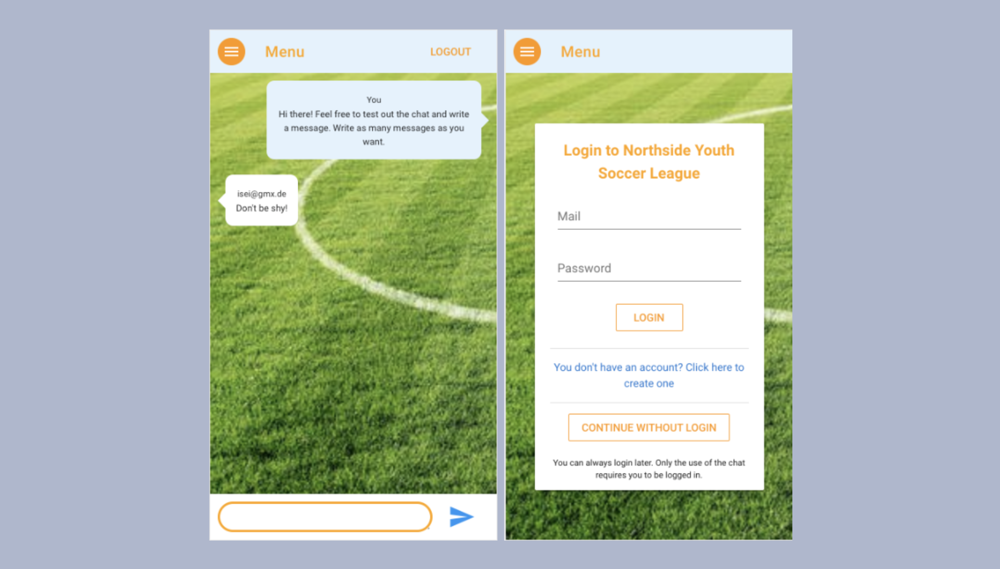
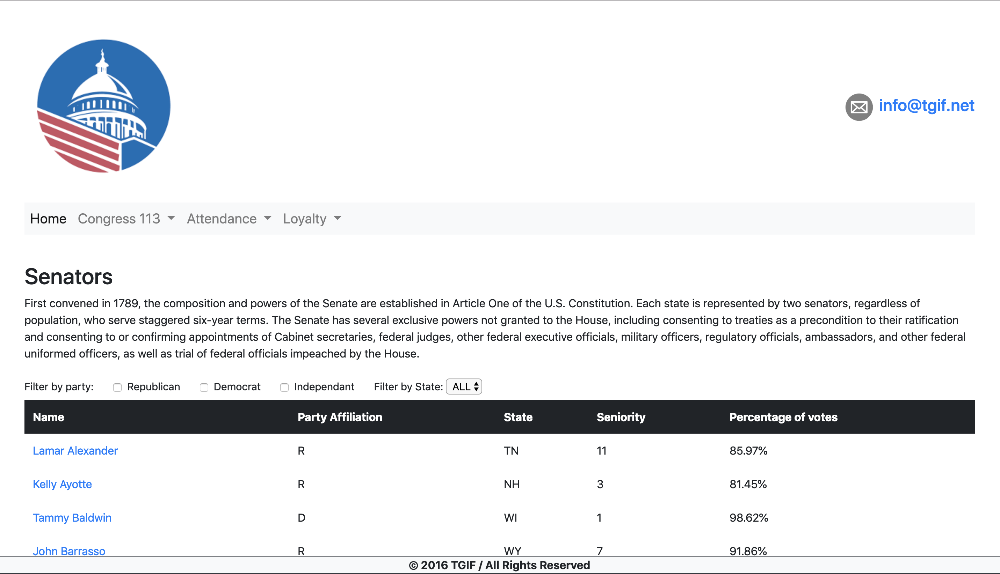
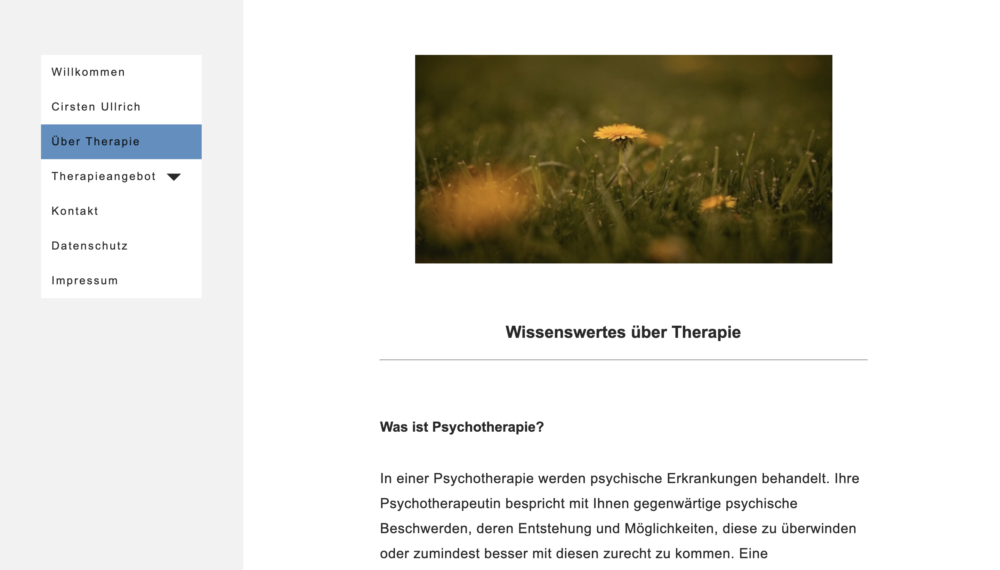
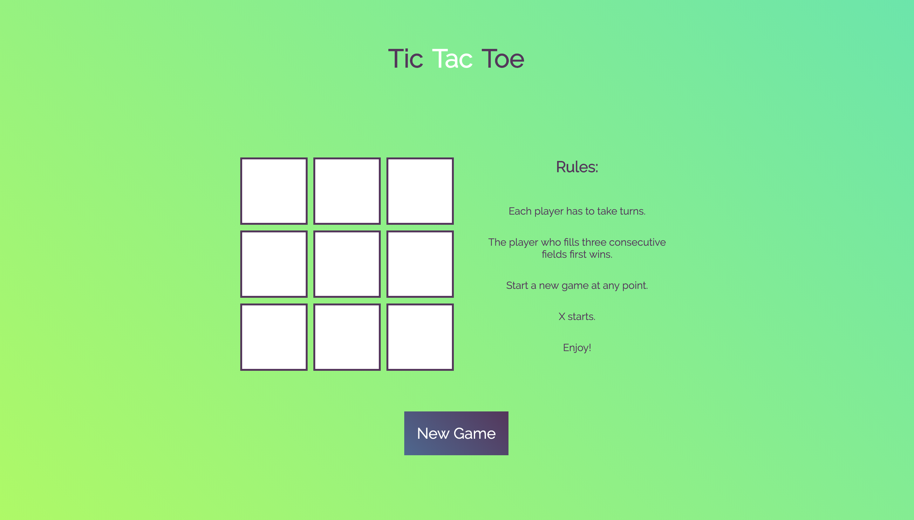
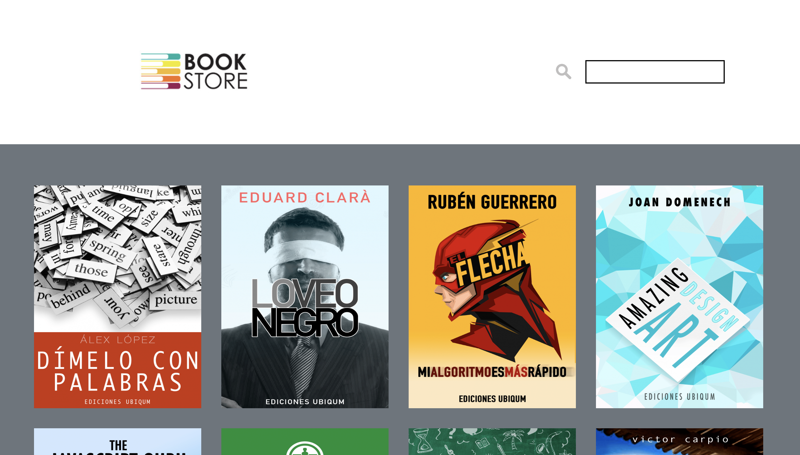

Dies ist eine Multiplayer Version des berühmten
„Schiffeversenken“. Ein Benutzer muss sich anmelden, um spielen zu
können. Spring Security implementiert diesen
Sicherheitsmechanismus. Ein angemeldeter Nutzer kann entweder ein
neues Spiel erstellen oder einem Spiel beitreten, das von einem
anderen Spieler erstellt wurde. Am Anfang eines Spiels muss jeder
Spieler seine Schiffe per Drag & Drop auf einem 10×10 Spielfeld
platzieren. Anschließend kann die erste Runde an Angriffen
beginnen. Ein Angriff besteht aus fünf Schüssen auf bestimmte
Koordinaten, auf denen der Angreifer die Schiffe des Gegners
vermutet. Nach jeder Runde sieht der Angreifer, ob er getroffen
hat und/oder ob er selbst getroffen wurde. Ein Spieler gewinnt das
Spiel wenn er die gesamte Flotte des Gegners versenkt. Ein Spiel
endet unentschieden wenn beide Spieler in der gleichen Runde die
Flotte des Gegners versenken. Nach Spielende bekommt jeder Spieler
je nach Spielstand eine Punktbewertung, die in der zugehörigen
Datenbank gespeichert wird und die in seine allgemeine Wertung
miteinfließt. Auf der Homepage kann der Spieler in einer Tabelle
seinen Punktestand einsehen, sowie den der anderen Spieler. Selbst
wenn ein Spieler weiß, wie er die Sicherheitsmechanismen im
Frontend umgehen kann, blockt der Server alle illegalen Anfragen
ab, mit denen ein Spieler ein Spiel manipulieren könnte. Bei der
Gestaltung des UI wurde auf Fehlerprävention und
leichtverständliche Bedienbarkeit besonderen Wert gelegt.
Technologien: Java 8, Gradle, Spring Boot, Javascript, jQuery,
Vue.js

Diese Seite ähnelt auf den ersten Blick der weiter unten gezeigten
Website für Barbara Seidl, ist aber eine erweiterete, komplexere
Version dieser. Die Psychotherapeutensuche bietet dem Nutzer die
Möglichkeit über die Eingabe einer Adresse Therapeuten sortiert
nach Nähe zu dieser Adresse anzuzeigen. Hierfür nutze ich die von
Google Maps bereitgestellte Distance Matrix API. Die Suche kann
aber auch ohne die Eingabe einer Adresse genutzt werden. Nutzer
können Filter setzen, z.B. welche Art von Therapie oder welche Art
der Abrechnung sie bevorzugen. Weiterhin gibt es bei dieser
Version ein Kontaktformular (Email.js). Da Barbara Seidl (meine
Mutter) zum heutigen Zeitpunkt weder ein Kontaktformular, noch die
Therapeutensuche benötigt, befinden diese sich nicht auf der von
meiner Mutter offiziell betriebenen Praxis-Website.
Technologien: Nuxt.js, Vuetify, Google Maps Distance Matrix API

Diese Single Page Application - entwickelt mit Firebase und der
Vue CLI für die mobile Nutzung hat Benutzerauthentifizierung und
einen Chat in Echtzeit. Ich habe eine simplere Version während
meiner Kurszeit gebaut. Es war Teil des Lehrplans. Nach dem Ende
des Kurses habe ich nochmal eine verbesserte Version davon
gemacht. Dabei habe ich auf die zwei Vue.js Frameworks Vuetify und
Vuex zurückgegriffen, was zu einer noch besseren User Experience
führt. Der Kunde ist ein Fußballverein, der seinen Mitlgliedern
eine Web App zur Verfügung stellen möchte, damit diese deren
Funktionalität auch von unterwegs nutzen können. Dazu gehört
einmal der Chat. Weiterhin soll die App aber auch anstehende
Spiele anzeigen und allgemeine Informationen zugänglich machen.
Die Nutzung des Chats erfordert ein Einloggen. Die anderen Seiten
können als Gast benutzt werden. Tipp: Nachdem Sie den Link
geklickt haben, bietet Chrome die Möglichkeit den 'Device Mode'
auf ein Smartphone Ihrer Wahl umzustellen.
Technologien: Vue CLI, Vuetify, Vuex, Firebase

TGIF steht für 'Transparency in American Government'. TGIF hat das
Ziel der amerikanischen Öffentlichkeit politisch relevante Daten
zugänglich zu machen. Trotz des recht simplen Designs, erreicht
die Seite, dass der Websitenbesucher durch die Nutzung von Filtern
und Tabellen schnell die für ihn interessanten Informationen
findet. Auf meinem Github Account finen Sie zwei Versionen. Einmal
habe ich die Seite zu Übungszwecken mit Vanilla Javascript gebaut
und einmal mit der Hilfe von Vue.js. Die Seite ist voll responsiv
und funktioniert mit Safari, Firefox und Chrome.
Technologien: Vanilla JS/Vue.js, Bootstrap

Cirsten Ullrich ist eine erfolgreiche Psychotherapeutin mit
eigener Praxis in der Münchner Innenstadt. Meine Aufgabe war es,
ihr einen schlichten, übersichtlichen Webauftritt aufzubauen.
Gemeinsam mit der Kundin wurde ein Konzept und ein Design
entworfen, das dann von mir umgesetzt wurde. Der Inhalt (Text und
Fotos) wurde von Frau Ullrich bereitgestellt. Eventuell muss durch
eine berufliche Veränderung die Website in der Zukunft weiter
ausgebaut werden.
"Da ich mich mit dem Internet und allem was damit zusammenhängt überhaupt nicht auskenne, war es mir
wichtig jemanden zu haben, der mich rundum gut berät und mir alles in einfachen Worten erklärt. Bei Frau
Seidl war das der Fall. Darüber hinaus ist sie sehr zuverlässig, kompetent und freundlich. Mit dem
Endergebnis bin ich sehr zufrieden! Ich gebe 5 von 5 Punkten."
Cirsten Ullrich, E-Mail: praxis@cirstenullrich.de,
Tel.: 0151 23328496 (für Rückfragen)
Technologien: HTML5, CSS3, JS

Dieses Spiel habe ich mit Vanilla JavaScript zu Übungszwecken
entwickelt. Tic Tac Toe (oder Drei gewinnt) ist ein klassisches,
einfaches Zweipersonen-Strategiespiel.
Technologien: HTML5, CSS3, JS

Diese Website habe ich für meine Mutter gemacht, die als
Psychotherapeutin eine eigene Praxis leitet. Nachdem ich auf einem
Meetup eine Einführung zu Nuxt.js erhalten hatte, wollte ich die
Vue.js Framework direkt in einem Projekt einsetzen. Nuxt.js kommt
mit drei verschiedenen 'Rendering modes'. Die Option 'Server Side
Rendered (Universal)' bietet gegenüber einer normalen SPA
bedeutende Vorteile. Webpages werden beim ersten Aufrufen vom
Server gerendert, was dazu führt, dass der Nutzer schneller etwas
sieht und auch Webcrawler keinen Seiten ohne Inhalt begegnen
(schlecht hinsichtlich der SEO). 'Universal' vereint das Beste von
beiden Welten, denn wenn der User dann auf der Seite navigiert,
läd JavaScript wie gewohnt die Inhalte.
Technologien: Nuxt.js, Vuetify

Die Seite könnte als simples Frontend eines Buchladen dienen. Es
handelt sich hierbei um eines meiner frühsten Projekte. Nutzer
können nach Buchtiteln suchen und die Titel umdrehen, um auf der
Rückseite mehr Informationen über das Buch zu finden. Dort
befindet sich auch ein Button, der eine Bildergallerie öffnet. Die
Seite ist durch die Integration von Bootstrap voll responsiv. Wie
immer ist auch Vue mit im Spiel. Bitte nutzen Sie Firefox oder
Chrome, um die Seite anzuschauen.
Technologien: Vue.js, Bootstrap